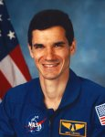

Lyndon B. Johnson Space Center
Houston, Texas 77058
|
National Aeronautics and Space Administration Lyndon B. Johnson Space Center Houston, Texas 77058 |
 |
Biographical Data |
||
Gregory T. Linteris (Ph.D.)
Payload Specialist
PERSONAL DATA: Born October 4, 1957, in Demarest, New Jersey, where his parents, Lino Luigi Linteris and Helen Mary Linteris reside. Single. Recreational interests include running, skiing, board sailing, hiking, backpacking, and reading, and was a member of Princeton's wrestling team.
EDUCATION: Graduated from Northern Valley Regional High School at Demarest, New Jersey in 1975; received a bachelor of science degree in chemical engineering from Princeton University in 1979; obtained a master of science degree from the design division of the mechanical engineering department at Stanford University in 1984; and was awarded a doctorate in mechanical and aerospace engineering from Princeton University in 1990.
ORGANIZATIONS: Member of American Institute of Aeronautics and Astronautics, American Physical Society, Combustion Institute, Sigma Xi.
PUBLICATIONS: Dr. Linteris has over 40 publications in the areas of combustion, chemical kinetics, spectroscopy, and heat transfer.
SPECIAL HONORS: Graduated with honors from Princeton University (1979). Awarded a Mechanical Engineering Department Fellowship from Stanford University (1983), and received Fourth Place in the James F. Lincoln National Design Competition (1984). At Princeton, he was the recipient of a Guggenheim Fellowship (1985), a Grumman Prize for excellence in Research (1988), and the Luigi Crocco Award (1988) for outstanding performance as an Assistant in Instruction.
EXPERIENCE: At Princeton from 1985 to 1990, Dr. Linteris studied the high temperature chemical kinetics of combustion reactions in a turbulent chemical kinetic flow reactor using laser induced fluorescence and laser absorption. As a research staff member at the University of California, San Diego, from 1990 to 1992, he studied droplet dynamics and performed numerical and analytical modeling of the chemistry important in the gas-phase reaction region of solid rocket propellants. Since 1992 he has been at the National Institute of Standards and Technology where he has been developing a research program on advanced fire suppressants and studying the inhibition mechanisms of chemical inhibitors. He is Principal Investigator on a NASA microgravity combustion experiment: "Chemical Inhibitor Effects on Diffusion Flames in Microgravity."
SPACE FLIGHT EXPERIENCE: Twice flown, Dr. Linteris was a payload specialist on STS-83 (April 4-8,1997) and STS-94 (July 1-17, 1997) and has logged over 471 hours in space. STS-83, the Microgravity Science Laboratory (MSL-1) Spacelab mission, was cut short because of problems with one of the Shuttle's three fuel cell power generation units. Mission duration was 95 hours and 12 minutes, traveling 1.5 million miles in 63 orbits of the Earth. STS-94 was a re-flight of the Microgravity Science Laboratory (MSL-1) Spacelab mission, and focused on materials and combustion science research in microgravity. Mission duration was 376 hours and 45 minutes, traveling 6.3 million miles in 251 orbits of the Earth.
JULY 1997